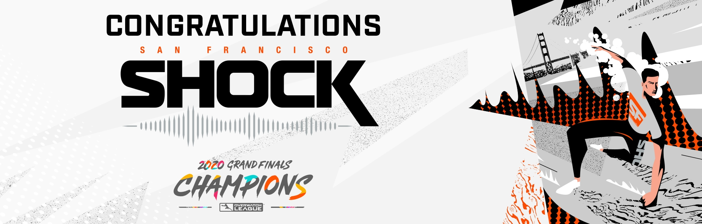

Shock Win 2020 Championship, Establish a Dynasty of Their Own
“I still can’t really believe it,” Shock head coach Dae-Hee “Crusty” Park said. “This whole season was definitely not easy but the fact that we were able to defend our championship and win it again this year was a huge thing, and I’m super happy about it right now.”
The Shock went into the playoffs with a strong resolve to defend their title, but they were not working off the same script from 2019.
That Shock team was a juggernaut that barreled through the losers’ bracket before crushing the Vancouver Titans in the Grand Finals. This year there was something a little more human about them. They were not indestructible; the team lost an MVP in Jay “Sinatraa” Won and traded Min-Ho “Architect” Park. They were not infallible; they made a couple of uncharacteristically poor reads on the meta and had to patch up holes in the roster.
During Grand Finals Weekend, the Shock exhibited major flaws tied to map types and had to stave off attempted reverse sweeps from both the Dynasty and the Shanghai Dragons due to their inability to win on assault or escort. Against Seoul in the championship match, they let yet another 2-0 lead slip away, dropping Hanamura for the first time in two years before getting full-held by a bold Genji comp on Watchpoint: Gibraltar, another one of their strongholds during the regular season.
“After Gibraltar, I just said, ‘Hey, it doesn’t matter, we know we’re still better than them,’ and that’s what I repeated throughout the whole finals,” Super said. “Our experience in these situations where high stakes are on the line [helped]; we know how to remain calm, talk about what happened, and we made the proper adjustments. Our confidence didn’t waver at all.”The in-game reset was a reflection of the preparations made by the coaches, as the double-elimination format of Grand Finals Weekend required the Shock to evolve quickly over a short period of time.
“We were thinking of tailoring our strategy for every team but it didn’t really work out well in practice, so we spent our time fixing our playstyles,” Crusty said. “We conducted internal scrims and constructed Plan As and Plan Bs so that no matter what situation arose, we would be able to respond to it and find a way out.”
Despite their flaws, the Shock never strayed from their strengths, and in the championship match against Seoul they fully exploited the compositional differences in their support line. Min-Ki “Viol2t” Park boosted 2,600 damage per 10 minutes with Zenyatta’s Orb of Destruction, allowing his teammates to get picks onto the opposing tank players much quicker than the opposing Ana. Grant “Moth” Espe also outpaced his Mercy counterpart with 47 Resurrections to 25, as the Shock consistently provided ample cover for him to make riskier plays.
An online Grand Finals meant that the confetti was digital this year, the trophies were thousands of miles away, there wasn’t a palpable crowd atmosphere for the players to soak in, and there won’t be any boisterous celebrations due to COVID-19 risks. But the work put in by the Shock, by the other three final teams, and by the Overwatch League itself, was real. The real-world obstacles were real. The passion of the fans and the intensity of the matches were real. It was a long and unexpected season, but it was all real.
And in this reality, the San Francisco Shock are still champions.